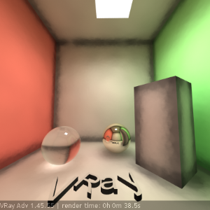
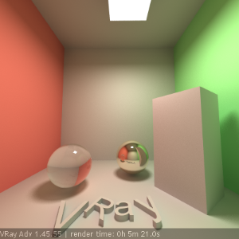
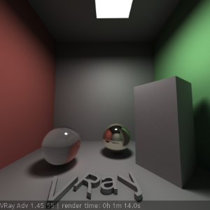

Indirect Illumination (GI)
Indirect Illumination Overview
V-Ray implements several approaches for computing indirect illumination with different trade-offs between quality and speed:
Brute Force
This is the simplest approach; indirect illumination is computed independently for each shaded surface point by tracing a number of rays in different directions on the hemisphere above that point.
Advantages:
-
this approach preserves all the detail (e.g. small and sharp shadows) in the indirect lighting;
-
it is free from defects like flickering in animations;
-
no additional memory is required;
-
indirect illumination in the case of motion-blurred moving objects is computed correctly.
Disadvantages:
-
the approach is very slow for complex images (e.g. interior lighting);
-
it tends to produce noise in the images, which can be avoided only by shooting a larger number of rays, thus slowing it even more.
Irradiance Map
This approach is based on irradiance caching; the basic idea is to compute the indirect illumination only at some points in the scene, and interpolate for the rest of the points.
Advantages:
-
the irradiance map is very fast compared to direct computation, especially for scenes with large flat areas;
-
the noise inherent to direct computation is greatly reduced;
-
the irradiance map can be saved an re-used to speed up calculations of different views for the same scene and of fly-through animations;
-
the irradiance map can also be used to accelerate direct diffuse lighting from area light sources.
Disadvantages:
-
some details in indirect lighting can be lost or blurred due to the interpolation;
-
if low settings are used, flickering may occur when rendering animations;
-
the irradiance map requires additional memory;
-
indirect illumination with motion-blurred moving objects is not entirely correct and may lead to noise (although in most cases this is not noticeable).
Photon Map
This approach is based on tracing particles starting from the light sources and bouncing around the scene. This is useful for interior or semi-interior scenes with lots of lights or small windows. The photon map usually does not produce good enough results to be used directly; however it can be used as a rough approximation to the lighting in the scene to speed the calculation of GI through direct computation or irradiance map.
Advantages:
-
the photon map can produce a rough approximation of the lighting in the scene very quickly;
-
the photon map can be saved and re-used to speed up calculation of different views for the same scene and of fly-through animations;
-
the photon map is view-independent.
Disadvantages:
-
the photon map usually is not suitable for direct visualization;
-
requires additional memory;
-
in V-Ray's implementation, illumination involving motion-blurred moving objects is not entirely correct (although this is not a problem in most cases).
-
the photon map needs actual lights in order to work; it cannot be used to produce indirect illumination caused by environment lights (skylight).
Light Cache
Light caching is a technique for approximating the global illumination in a scene. It is very similar to photon mapping, but without many of its limitations. The light map is built by tracing many many eye paths from the camera. Each of the bounces in the path stores the illumination from the rest of the path into a 3d structure, very similar to the photon map. The light map is a universal GI solution that can be used for both interior or exterior scenes, either directly or as a secondary bounce approximation when used with the irradiance map or the brute force GI method.
Advantages:
-
the light cache is easy to set up. We only have the camera to trace rays from, as opposed to the photon map, which must process each light in the scene and usually requires separate setup for each light.
-
the light-caching approach works efficiently with any lights - including skylight, self-illuminated objects, non-physical lights, photometric lights etc. In contrast, the photon map is limited in the lighting effects it can reproduce - for example, the photon map cannot reproduce the illumination from skylight or from standard omni lights without inverse-square falloff.
-
the light cache produces correct results in corners and around small objects. The photon map, on the other hand, relies on tricky density estimation schemes, which often produce wrong results in these cases, either darkening or brightening those areas.
-
in many cases the light cache can be visualized directly for very fast and smooth previews of the lighting in the scene.
Disadvantages:
-
like the irradiance map, the light cache is view-dependent and is generated for a particular position of the camera. However, it generates an approximation for indirectly visible parts of the scene as well - for example, one light cache can approximate completely the GI in a closed room;
-
currently the light cache works only with V-Ray materials;
-
like the photon map, the light cache is not adaptive. The irradiance is computed at a fixed resolution, which is determined by the user;
-
the light cache does not work very well with bump maps; use the irradiance map or brute force GI if you want to achieve better results with bump maps.
-
lighting involving motion-blurred moving objects is not entirely correct, but is very smooth since the light cache blurs GI in time as well (as opposed to the irradiance map, where each sample is computed at a particular instant of time).
Which method to use? That depends on the task at hand. The Examples below can help you in choosing a suitable method for your scene.
Primary and Secondary Bounces
The indirect illumination controls in V-Ray are divided into two large sections: controls concerning primary diffuse bounces and controls concerning secondary diffuse bounces. A primary diffuse bounce occurs when a shaded point is directly visible by the camera, or through specular reflective or refractive surfaces. A secondary bounce occurs when a shaded point is used in GI calculations.
Example: Comparisons of Different GI Methods
Here is a scene rendered with different GI algorithms in V-Ray. Combining the different GI engines allows great flexibility in balancing time versus quality of the final image.

Brute force GI, 4 bounces.
The image is darker because only 4 light bounces are computed.
Notice the grain and the long render time.
Render time: 25m 3.9s
Irradiance map + brute force GI, 4 bounces.
The image is darker because only 4 light bounces are computed.
The grain is gone, although the GI is a little blurry.
(see the GI caustics below the glass sphere).
Render time: 5m 56.8s
Light cache only.
Very fast, but shadows are blurry
(Store direct light for the light map is on).
Render time: 0m 20.2s
Light cache and direct lighting
(Store direct light is off).
Render time: 0m 34.8s
Brute force GI + light cache.
There is some grain in the GI but is a lot faster than brute force GI alone.
Render time: 5m 36.0s
Irradiance map + light cache;
probably the best quality/speed ratio.
Render time: 1m 39s
Photon map only.
Notice the caustics from the glass sphere, as well as the dark corners.
Render time: 0m 46.2s
Photon map and direct lighting.
Render time: 1m 2.1s

Photon map with precomputed irradiance only.
Splotchy, but faster than a raw photon map.
Render time: 0m 38.5s
Irradiance map + photon map.
Notice the dark corners and incorrect shading on the letters.
Render time: 3m 23.5s
Irradiance map + photon map with retracing of corners.
Corners are better although still a little dark.
Render time: 7m 49.2s

Irradiance map + photon map with precomputed irradiance, with corner retracing.
Render time: 5m 21.0s
Irradiance map + light cache with GI caustics enabled.
Notice the slowdown due to the caustics.
Render time: 2m 17.6s
Light cache in Progressive path tracing Mode with photon-mapped caustics.
Render time is quite high.
Render time: 1h 44m 15.4s
V-Ray: Indirect Illumination Parameters
On - turn indirect illumination on and off.
GI Caustics
GI caustics represent light that has gone through one diffuse, and one or several specular reflections (or refractions). GI caustics can can be generated by skylight, or self-illuminated objects, for example. However, caustics caused by direct lights cannot be simulated in this way. You must use the separate Caustics section to control direct light caustics. Note that GI caustics are usually hard to sample and may introduce noise in the GI solution.
Example: GI Caustics
This example shows GI caustics generated by a self-illuminated object:
Refractive GI caustics - this allows indirect lighting to pass through transparent objects (glass, etc.). Note that this is not the same as Caustics, which represent direct light going through transparent objects. You need refractive GI caustics to get skylight through windows, for example.
Reflective GI caustics - this allows indirect light to be reflected from specular objects (mirrors, etc.). Note that this is not the same as Caustics, which represent direct light going through specular surfaces. This is off by default, because reflective GI caustics usually contribute little to the final illumination, while often they produce undesired subtle noise.
Post-Processing
These controls allow additional modification of the indirect illumination, before it is added to the final rendering. The default values ensure a physically accurate result; however the user may want to modify the way GI looks for artistic purposes.
Saturation - controls the saturation of the GI; a value of 0.0 means that all color will be removed from the GI solution and will be in shades of grey only. The default value of 1.0 means the GI solution remains unmodified. Values above 1.0 boost the colors in the GI solution.
Contrast - this parameter works together with Contrast base to boost the contrast of the GI solution. When Contrast is 0.0, the GI solution becomes completely uniform with the value defined by Contrast base. A value of 1.0 means the solution remains unmodified. Values higher that 1.0 boost the contrast.
Contrast base - this parameter determines the base for the contrast boost. It defines the GI values that remain unchanged during the contrast calculations.
Ambient Occlusion
These controls allow you to add an ambient occlusion term to the global illumination solution.
On - enable or disable ambient occlusion.
Amount - the amount of ambient occlusion. A value of 0.0 will produce no ambient occlusion.
Radius - ambient occlusion radius.
Subdivs - determines the number of samples used for calculating ambient occlusion. Lower values will render faster, but might introduce noise.
Example: Ambient Occlusion
Note: the scene in this example is from Evermotion. ( http://www.evermotion.org/)
This example demonstrates the effect of the global ambient occlusion options.
The first image to the right is rendered with the Light cache for both primary and secondary bounces, Fixed Filter type for the light cache, and Store direct light off. The second image in the center is rendered with the same light cache settings, but with global ambient occlusion enabled. The third image to the right is rendered without ambient occlusion, with Brute force GI engine for primary bounces, and the Light cache as a secondary engine with Nearest Filter type. The render times include the time for calculating the light cache. Note how ambient occlusion can produce a feeling of a more detailed image, even though the result is not entirely correct.
Ambient occlusion is off - lighting is good, but there is a lack of detail
Ambient occlusion is on - details are much more defined
Brute force GI, no ambient occlusion - details are fine, but render times is longer.
Primary Diffuse Bounces
Multiplier - this value determines how much primary diffuse bounces contribute to the final image illumination. Note that the default value of 1.0 produces a physically accurate image. Other values are possible, but not physically plausible.
Primary GI engine - the list box specifies the method to be used for primary diffuse bounces.
-
Irradiance map - selecting this will cause V-Ray to use an irradiance map for primary diffuse bounces. See the Irradiance Map section for more information.
-
Global photon map - selecting this option will cause V-Ray to use a photon map for primary diffuse bounces. This mode is useful when setting up the parameters of the global photon map. Usually it does not produce good enough results for final renderings when used as a primary GI engine. See the Global photon map section for more information.
-
Brute force - selecting this method will cause V-Ray to use direct computation for primary diffuse bounces. See the Brute force GI section for more information.
-
Light cache - this chooses the light cache as the primary GI engine. See the Light Cache section for more information.
Example: Light Bounces
This example shows the effect of the number of light bounces on an image:
Direct lighting only: GI is off.

1 bounce: irradiance map, no secondary GI engine.

2 bounces: irradiance map + brute force GI with 1 secondary bounce.
4 bounces: irradiance map + brute force GI with 3 secondary bounces
8 bounces: irradiance map + brute force GI with 7 secondary bounces
Unlimited bounces (complete diffuse lighting solution): irradiance map + light cache
Secondary Diffuse Bounces
Multiplier - this determines the effect of secondary diffuse bounces on the scene illumination. Values close to 1.0 may tend to wash out the scene, while values around 0.0 may produce a dark image. Note that the default value of 1.0 produces physically accurate results. While other values are possible, they are not physically plausible.
Secondary diffuse bounces method - this parameter determines how V-Ray will calculate secondary diffuse bounces.
-
None - no secondary bounces will be computed. Use this option to produce skylit images without indirect color bleeding.
-
Global photon map - selecting this option will cause V-Ray to use a photon map for primary diffuse bounces. This mode is useful when setting up the parameters of the global photon map. Usually it does not produce good enough results for final renderings when used as a primary GI engine. See the Global Photon Map section for more information.
-
Brute force - selecting this method will cause V-Ray to use direct computation for primary diffuse bounces. See the Brute Force GI section for more information.
-
Light cache - this chooses the light cache as the primary GI engine. See the Light Cache section for more information.
Notes
-
V-Ray does not have a separate skylight system. The skylight effect can be achieved by setting the background color or environment map in the 3ds Max environment dialog, or in V-Ray's own Environment rollout.
-
You will get physically accurate lighting if you set both the primary and secondary GI multipliers to their default value of 1.0. While other values are possible, they will not produce a physically accurate result.